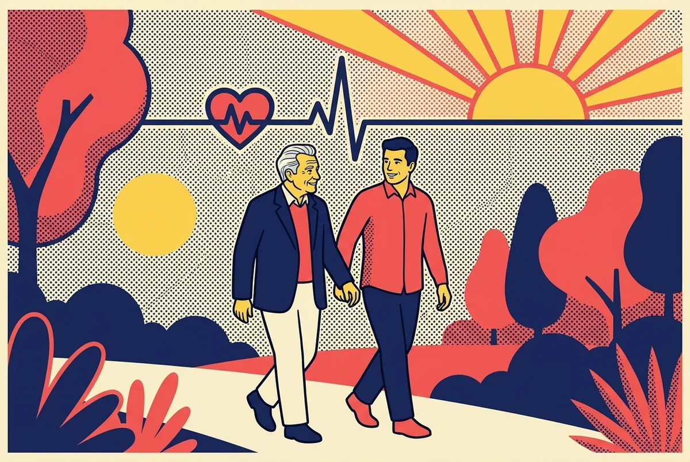

פתח ככה: ״יש לי כמה שאלות קריטיות, אפשר לעבור עליהן לפני שאתה חותם על השחרור?״ —
ובקש שהתשובות המהותיות ייכנסו למכתב השחרור. מה שלא כתוב שם לא קיים מול קופת החולים ומול כל רופא בהמשך. אל תצא בלי עותק ביד.
מילה עם * — לחיצה עליה פותחת הסבר קצר.
0 / 27
התשובות
נשמר אוטומטית במכשיר
טבלת סיכום
מילון מונחים
כל המונחים במקום אחד

הלב הוא שריר. גם כשהוא נחלש — לפעמים הוא לומד לחזור. שאלות טובות היום הן חצי מהדרך לשם.